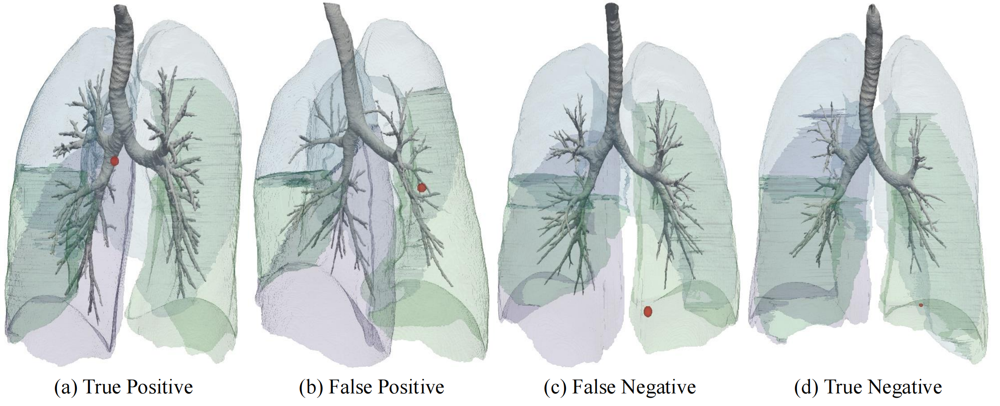

Anatomy-Aware Prediction of Bronchoscopic Accessibility from 3D CT
Abstract
Pre-operative planning for bronchoscopy is critical for the diagnosis of lung lesions. Current accessibility assessment relies on subjective manual inspection of CT scans, which is time-consuming and prone to inter-observer variability. In this paper, we formalize bronchoscopy accessibility prediction as a novel supervised learning task and present the first end-to-end framework to address it. We propose an Anatomy-Aware Mixture-of-Experts (MoE) model that integrates specialized modules: a CT Expert for local morphological features, a Lobe Expert for anatomical priors, and a Path Geometry Expert that encodes the sequential constraints of the bronchial tree. To support this task, we curated the first clinical dataset of 438 cases with pre-operative CT scans and documented procedural outcomes. Experimental results demonstrate that our method achieves an AUROC of 0.8052, significantly outperforming both state-of-the-art baselines and experienced human experts. This work establishes a new benchmark for computer-aided interventional planning in pulmonary medicine.
Framework overview: anatomy-aware adaptive expert fusion.
Quantitative Results
Comparison with Diverse Baselines
Conventional ML on handcrafted features shows limited discriminative ability; CT-based deep networks reach at best 0.6333 AUROC, and graph neural networks up to 0.6483. Human experts achieve only 0.5661 AUROC, indicating that visual CT inspection alone is insufficient. Our hybrid model reaches 0.8052 AUROC with just 3.83M parameters.
| Input | Method | Acc. | F1 | AUROC | PRAUC | Params |
|---|---|---|---|---|---|---|
| Geometric Features | Logistic Regression | 0.6136 | 0.7536 | 0.5128 | 0.6897 | N/A |
| Random Forest | 0.5682 | 0.7031 | 0.4590 | 0.5785 | N/A | |
| CT Volumes | DenseNet121† | 0.5909 | 0.7313 | 0.5301 | 0.6543 | 11.24M |
| Swin Transformer† | 0.6136 | 0.7499 | 0.5418 | 0.8069 | 38.50M | |
| EfficientNet-b0† | 0.6022 | 0.7517 | 0.5725 | 0.7459 | 4.69M | |
| ConvNeXt† | 0.6023 | 0.7482 | 0.5982 | 0.7750 | 31.30M | |
| ResNet18† | 0.5795 | 0.6185 | 0.6333 | 0.7700 | 33.16M | |
| Airway Graph | GAT† | 0.6386 | 0.7794 | 0.5767 | 0.7115 | 52.35K |
| GIN† | 0.6265 | 0.7257 | 0.5774 | 0.6782 | 101.12K | |
| GraphSAGE† | 0.6203 | 0.7541 | 0.5897 | 0.7129 | 86.14K | |
| GCN† | 0.6329 | 0.7752 | 0.6483 | 0.7666 | 51.59K | |
| — | Human Experts | 0.5272 | 0.5423 | 0.5661 | 0.7434 | N/A |
| Hybrid | Ours | 0.8068 | 0.8595 | 0.8052 | 0.8496 | 3.83M |
† indicates a statistically significant difference compared with the proposed method (DeLong test, p < 0.05). Human assessments provided by 22 clinicians.
Comparison Under Identical CT Inputs
To verify the gain does not come from richer inputs alone, we compare against CT-based deep networks trained on the same multi-channel inputs (CT intensity, airway distance map, lesion mask). Our model still leads clearly, confirming the benefit comes from architectural decomposition and adaptive fusion.
| Method | Acc. | F1 | AUROC | PRAUC |
|---|---|---|---|---|
| Swin Transformer† | 0.6250 | 0.7626 | 0.5243 | 0.6698 |
| ConvNeXt† | 0.6477 | 0.7438 | 0.6629 | 0.7057 |
| DenseNet121† | 0.6590 | 0.7058 | 0.6640 | 0.7611 |
| ResNet18† | 0.6818 | 0.7586 | 0.7109 | 0.7834 |
| EfficientNet-b0 | 0.6704 | 0.7819 | 0.7310 | 0.8269 |
| Ours | 0.8068 | 0.8595 | 0.8052 | 0.8496 |
† indicates a statistically significant difference (DeLong test, p < 0.05).
Ablation Study
We evaluate the contribution of each expert. The CT Expert is the strongest single branch (0.7382 AUROC); the Lobe Expert performs near chance alone, consistent with its role as a global prior. Combining all three through adaptive gating gives the best result.
| Lobe Expert | Path Expert | CT Expert | Acc. | F1 | AUROC | PRAUC |
|---|---|---|---|---|---|---|
| ✓ | — | — | 0.6190 | 0.7647 | 0.5513 | 0.7030 |
| — | ✓ | — | 0.6310 | 0.7704 | 0.6040 | 0.6665 |
| — | — | ✓ | 0.7500 | 0.8035 | 0.7382 | 0.8028 |
| ✓ | ✓ | — | 0.7045 | 0.7968 | 0.5960 | 0.6857 |
| ✓ | — | ✓ | 0.7841 | 0.8504 | 0.7477 | 0.8141 |
| — | ✓ | ✓ | 0.7500 | 0.8358 | 0.7756 | 0.8030 |
| ✓ | ✓ | ✓ | 0.8068 | 0.8595 | 0.8052 | 0.8496 |
Qualitative Analysis

Representative true positive (TP), false positive (FP), false negative (FN), and true negative (TN) cases. Airway trees are rendered together with target lesion locations (red markers). The TP case shows a lesion near a well-connected branch with sufficient diameter; the FP case sits close to the distal bronchi but with abrupt branching changes, where the CT Expert may overweigh local proximity; the FN involves a peripheral lesion that may still be sampled in practice via operator expertise or ultra-thin bronchoscopes; the TN is a deeply peripheral lesion with sparse connectivity. Accessibility depends on both local lesion–airway adjacency and cumulative geometric constraints.
BibTeX
@inproceedings{peng2026bronchoacc,
title={Anatomy-Aware Prediction of Bronchoscopic Accessibility from 3D CT},
author={Peng, Linkai and Sun, Cuiling and Wang, Bin and Rowell, Jamie and Gao, Catherine and Ikizgul, Oyku and Sentasci, Eminenur and Bejar, Andrea and Aktas, Halil Ertugrul and Durak, Gorkem and Wahidi, Momen and Kapp, Christopher and Bagci, Ulas},
booktitle={International Conference on Medical Image Computing and Computer-Assisted Intervention (MICCAI)},
year={2026}
}